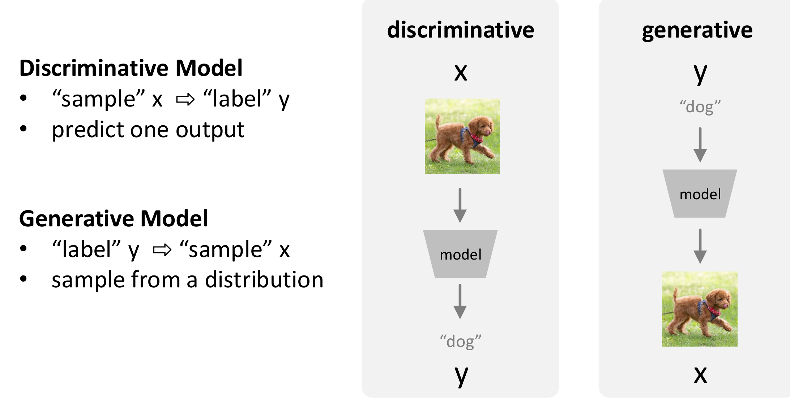
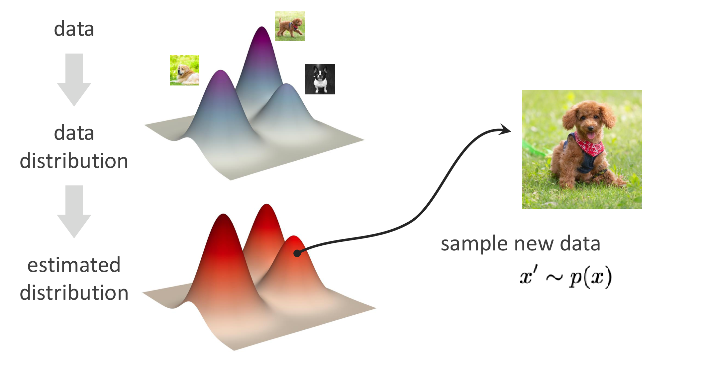
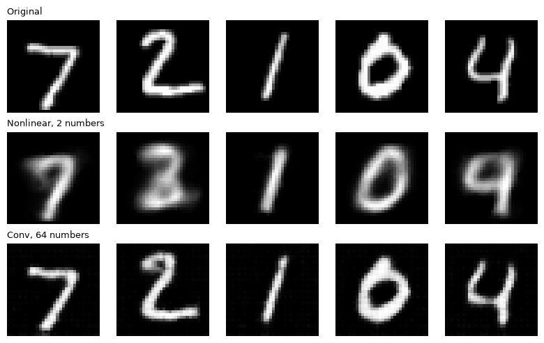
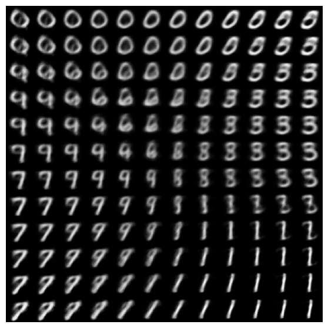

Why generate
Generative models are behind chatbots, text-to-image systems such as Stable Diffusion, text-to-video systems such as Sora, and protein design tools such as RFdiffusion (Watson et al., Nature 2023). These tasks look different, but they share four features (Kaiming He, MIT 6.7960, Lecture 14):
- There are many good answers to one input. A prompt has many valid images.
- Some answers are more plausible than others.
- The training data may contain no exact answer to the question asked.
- The output is richer than a label: a whole image, sentence or molecule.
A model that predicts one fixed output cannot handle that. We need a model that describes how likely each possible output is, and can draw new ones.
What a generative model is
A generative model learns the distribution of the data, \(p(x)\), so it can sample new data.

A discriminative model maps an image \(x\) to a label \(y\) and predicts one output. A generative model goes the other way, or produces \(x\) on its own, and samples from a distribution. The output is now a distribution, not a single label. In fact a softmax classifier already outputs a distribution, \(p(\text{class} \mid x)\). A generative model does the same for whole images.
Generative modeling is probabilistic modeling. There is some true distribution behind the data we collect. We fit an estimated distribution to it by optimizing a loss, then sample new data from the estimate: \(x' \sim p(x)\).

The families of generative models
- Autoencoders and VAEs encode the data into a simple distribution, then generate it back.
- GANs train a generator against a discriminator that asks: real or generated?
- Autoregressive models predict each piece from the pieces before it.
- Diffusion models turn noise into data, one small step at a time.
- Flow matching moves a simple distribution into the data distribution over time.
These notes cover the first three in detail. Diffusion and flow matching are in Part B.
Latent variables
A latent variable is a hidden cause behind the data we see. Picture a shadow on a wall. We see the shadow (the data), not what cast it (the latent variable). From a person-shaped shadow we guess a person, but the shadow in the slides was cast by a pile of scrap: we can only infer the cause, and the guess can be wrong.
Generative models use the same idea. Instead of modeling every pixel directly, they learn a few hidden factors, a small code \(z\), that explain the image. Autoencoders and VAEs learn \(z\) by compressing real images. GANs start from a random \(z\) and learn to turn it into images. Both rely on a small hidden code; they differ in how they learn it.
Autoencoders
The question: can we learn a compressed representation of an image, and reconstruct the original? An autoencoder has two parts. The encoder \(f\) maps an image \(x\) (a 32 × 32 digit is 1024 numbers) to a short code \(z\). The decoder \(g\) maps the code back to an image \(\hat{x}\). Training compares the output with the input:
\[ \mathcal{L} = \frac{1}{N}\sum_{i=1}^{N} \big\lVert x_i - \hat{x}_i \big\rVert^2, \qquad \hat{x}_i = g\big(f(x_i)\big) \]No labels are needed: the input is its own target. Over training the loss falls and the reconstructions sharpen.

The bottleneck is the narrow layer in the middle. Everything the decoder knows about the image has to pass through it. A smaller bottleneck compresses more, and the reconstruction gets blurrier: with 2 numbers, a 4 can come back as a 9.
The latent space problem
Each image's code is a point in latent space. Codes of similar images cluster together, but the clusters sit far apart, with empty space between them. To generate, we would pick a code and decode it. Codes in the empty space decode into blurry or meaningless shapes, and codes picked at random from \(\mathcal{N}(0, I)\) often land in a gap. The loss only asks the autoencoder to rebuild its training images, not to fill the space between them, so we cannot sample new images reliably. VAEs fix this.
Applications
- Image generators. Stable Diffusion works on an autoencoder's code, not on pixels (Rombach et al., CVPR 2022).
- Generating from learned codes. A transformer writes codes, and the autoencoder's decoder paints them (Esser et al., CVPR 2021).
- Filling in missing parts. Hide most of an image, and a masked autoencoder fills in the rest (He et al., CVPR 2022).
- Anomaly detection. A high reconstruction error flags defects in factory inspection (Bergmann et al., CVPR 2019).
Variational autoencoders
A VAE encodes to a distribution, not a point, so we can sample new images. For each image the encoder outputs a mean \(\mu\) and a standard deviation \(\sigma\), which define a Gaussian \(q(z \mid x)\) in latent space. The decoder turns a code sampled from it back into an image.
Two terms in the loss
\[ \mathcal{L}(\phi, \theta; x) = \underbrace{-\,\mathbb{E}_{q_\phi(z \mid x)}\big[\log p_\theta(x \mid z)\big]}_{\text{reconstruction}} \;+\; \underbrace{D_{KL}\big(q_\phi(z \mid x)\,\|\,p(z)\big)}_{\text{regularization}} \]The reconstruction term asks the decoded sample \(\hat{x}\) to look like \(x\). The regularization term keeps each image's Gaussian close to the prior \(p(z) = \mathcal{N}(0, I)\). For a diagonal Gaussian it has a closed form:
\[ D_{KL} = \frac{1}{2}\sum_{j}\left(\sigma_j^2 + \mu_j^2 - 1 - \log \sigma_j^2\right) \]This term spreads the codes evenly around the center of the latent space and penalizes packing them into small regions, which would amount to memorizing the data.
Why regularize
We want two properties. Continuity: points close in latent space decode to similar content. Completeness: any point sampled from the latent space decodes to meaningful content. Without regularization, the encoder can use tiny variances (pointed distributions) and far-apart means, which leaves gaps. With a normal prior, the means are pulled to the center and the variances are kept reasonable, so the groups overlap and the gaps close. During training, codes that start scattered move inside the prior and group by class.
The reparameterization trick
Sampling \(z \sim \mathcal{N}(\mu, \sigma^2)\) is random, so the gradient cannot flow back through it to \(\mu\) and \(\sigma\), or to the encoder's weights \(\phi\). The fix moves the randomness into a separate noise term:
\[ z = \mu + \sigma \odot \epsilon, \qquad \epsilon \sim \mathcal{N}(0, I) \]Here \(\odot\) multiplies each dimension. Now \(z\) is a plain formula of \(\mu\) and \(\sigma\), so the gradient of the loss reaches them, and through them the encoder. The noise \(\epsilon\) does not depend on the network.
def reparameterize(mu, logvar):
std = torch.exp(0.5 * logvar) # the network predicts log(sigma^2)
eps = torch.randn_like(std) # noise from N(0, I)
return mu + std * eps
def vae_loss(x, recon, mu, logvar, kl_weight=1.0):
rec = F.mse_loss(recon, x, reduction="none").flatten(1).sum(1).mean()
kl = -0.5 * torch.sum(1 + logvar - mu.pow(2) - logvar.exp(), dim=1).mean()
return rec + kl_weight * klOur code, from the Day 8 workbook (section 2).
Generation
To generate, sample a point from the prior and decode it. Because the latent space is organized, samples decode to realistic images, and walking across it morphs one digit into another.

Applications
- Molecule design. Encode molecules into a continuous space, then search it for better properties (Gómez-Bombarelli et al., ACS Central Science 2018).
- Image generation. A deep hierarchical VAE generates high-resolution faces (Vahdat and Kautz, NeurIPS 2020).
- Latent space for image generators. Stable Diffusion runs on the code of a KL-regularized autoencoder (Rombach et al., CVPR 2022).
Generative adversarial networks
The goal of a GAN is to output samples from the complex data distribution in one step. The idea: do not model the density at all, just learn to sample. We cannot sample from a complex distribution directly, so we sample something simple, noise \(z\), and learn a transformation from it to the data distribution.
Two networks compete. The generator \(g_\theta: \mathcal{Z} \to \mathcal{X}\) turns noise into an imitation of the data, to trick the discriminator. The discriminator \(d_\phi: \mathcal{X} \to [0, 1]\) scores how real an image looks, and tries to tell real data from the generator's fakes. The discriminator acts like a teacher pointing out errors; the generator is the student (Torralba, Isola and Freeman, Foundations of Computer Vision, Ch. 32).
Early in training the fakes are far from the real data, and the discriminator separates them easily. As the generator improves, the fakes move closer, and the discriminator has a harder time. At the end the fakes match the real data, and the discriminator can only guess: 1/2.
The min-max objective
\[ \min_{G}\,\max_{D}\; \mathbb{E}_{x \sim p_{\text{data}}}\big[\log D(x)\big] + \mathbb{E}_{z \sim p_z}\big[\log\big(1 - D(G(z))\big)\big] \]The discriminator maximizes: it scores real images near 1 and generated ones near 0. The generator minimizes: it makes \(D(G(z))\) close to 1, so the fakes pass as real (Goodfellow et al., NeurIPS 2014). Only the second term depends on \(G\); the real-data term has no \(G\) in it, so its gradient with respect to \(G\) is zero. At the global optimum, \(G\) reproduces the true data distribution.
The training loop
- Fix G, train D for \(k\) steps.
- Gradient ascent on D.
- Fix D, train G one step.
- Gradient descent on G.
Repeat. Taking \(k\) updates of D per update of G keeps D ahead of G. Once trained, the generator maps Gaussian noise to the target data manifold. CycleGANs go further and map one data manifold to another, such as horses to zebras (Zhu et al., ICCV 2017).
Applications
- Realistic faces. StyleGAN generates faces of people who do not exist (Karras et al., CVPR 2019).
- Image-to-image translation. CycleGAN turns horses into zebras, summer into winter, photos into paintings (Zhu et al., ICCV 2017).
- Super-resolution. SRGAN sharpens low-resolution images with realistic detail (Ledig et al., CVPR 2017).
Autoregressive models
An autoregressive model generates content one piece at a time, each piece predicted from the pieces before it. Given “Once upon ___”, the predictor fills in “a”. It is trained on many pairs of a prefix and the next element (“Once upon a” → “time”, “There and back” → “again”). To sample, it predicts an element, appends it to the input, and predicts again: “Colorless green ideas sleep” → “furiously” → “.”.
The probability model
The chain rule of probability makes this exact. The probability of a sequence is a product of next-element probabilities:
\[ p(\mathbf{X}) = p(x_n \mid x_1, \dots, x_{n-1})\; p(x_{n-1} \mid x_1, \dots, x_{n-2}) \cdots p(x_2 \mid x_1)\; p(x_1) = \prod_{i=1}^{n} p(x_i \mid x_1, \dots, x_{i-1}) \] \[ p(\text{Once upon a time}) = p(\text{Once})\; p(\text{upon} \mid \text{Once})\; p(\text{a} \mid \text{Once, upon})\; p(\text{time} \mid \text{Once, upon, a}) \]Each factor is a classification problem. To model \(p(\text{time} \mid \text{Once, upon, a})\), treat it as a next-word classifier that outputs a probability for every word in the vocabulary. Images work the same way: read the pixels in order, predict a distribution over colors for the next pixel, sample one, place it, and repeat until the image is complete.
Training
Training scores each prediction with the cross-entropy loss. The ground truth \(x_n\) is one-hot, so it picks out the log probability the model gave to the right color (or word):
\[ \mathcal{L} = -\sum_{k} x_{n,k}\, \log \hat{x}_{n,k} \]Recap
| Family | How it makes an image | Trained with | Strength | Watch out |
|---|---|---|---|---|
| Autoencoder | Decode a code | Reconstruction loss | Compression, denoising | Gaps in the code space; not reliable to sample |
| VAE | Decode a sample from \(\mathcal{N}(0, I)\) | Reconstruction + KL | Smooth, complete latent space | Samples can be blurry |
| GAN | Generator maps noise to an image in one step | Min-max game with a discriminator | Sharp samples | Training can be unstable |
| Autoregressive | Predict the next element, one at a time | Next-element classification (cross-entropy) | Exact likelihood | Slow sampling, one step at a time |
Discussion. Every family here uses a small hidden code or a sequence of simple choices to describe complex images. Which one would you pick to generate test images for a perception experiment, and why?